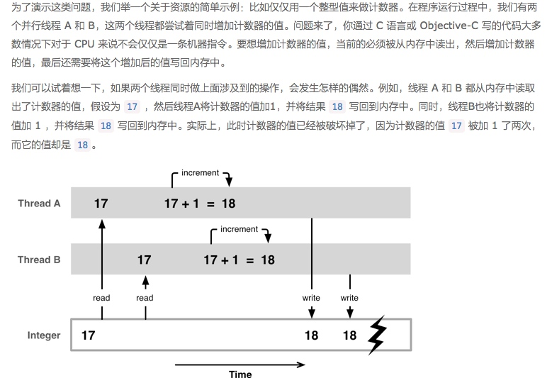
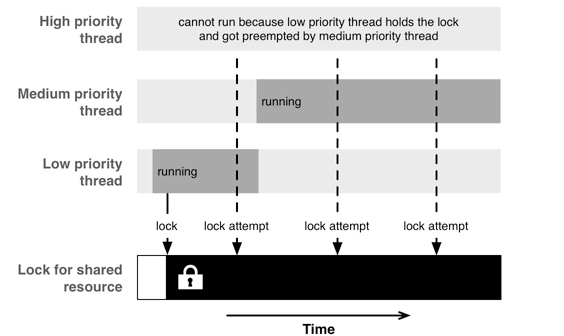

并发编程实践
1.GCD OR 操作队列
这两个是目前我们在iOS中用的最多的两套API
- 操作队列提供了在 GCD 中不那么容易复制的有用特性。其中最重要的一个就是可以取消在任务处理队列中的任务
- 操作队列在管理操作间的依赖关系方面也容易一些
- CD 给予你更多的控制权力以及操作队列中所不能使用的底层函数 扩展阅读: StackOverflow: NSOperation vs. Grand Central Dispatch Blog: When to use NSOperation vs. GCD
2.后台的Core Data
在着手 Core Data 的并行处理之前，最好先打一些基础。我们强烈建议通读苹果的官方文档 Concurrency with Core Data
Xcode 所提供的 Core Data 标准模版中，所设立的是运行在主线程中的一个存储调度 (persistent store coordinator)和一个托管对象上下文 (managed object context) 的方式。在很多情况下，这种模式可以运行良好。创建新的对象和修改已存在的对象开销都非常小，也都能在主线程中没有困难地完成。然后，如果你想要做大量的处理，那么把它放到一个后台上下文来做会比较好。一个典型的应用场景是将大量数据导入到 Core Data 中。
示例:
我们要导入一大组柏林的交通数据。在导入的过程中，我们展示一个进度条，如果耗时太长，我们希望可以取消当前的导入操作。同时，我们显示一个随着数据加入可以自动更新的 table view 来展示目前可用的数据。
解决方案:
我们创建一个NSOperation 的子类，将其叫做ImportOperation，我们通过重写 main方法，用来处理所有的导入工作。这里我们使用NSPrivateQueueConcurrencyType来创建一个独立并拥有自己的私有dispatch queue的 managed object context，这个 context 需要管理自己的队列。在队列中的所有操作必须使用performBlock或者performBlockAndWait来进行触发。
NSManagedObjectContext* context = [[NSManagedObjectContext alloc] initWithConcurrencyType:NSPrivateQueueConcurrencyType];
context.persistentStoreCoordinator = self.persistentStoreCoordinator;
context.undoManager = nil;
//performBlockAndWait:Synchronously performs a given block on the receiver’s queue.
[self.context performBlockAndWait:^
{
[self import];
}];
在这里我们重用了已经存在的persistent store coordinator。一般来说，初始化 managed object contexts 要么使用NSPrivateQueueConcurrencyType，要么使用 NSMainQueueConcurrencyType。
导入文件内容
/**
在导入前，我们枚举文件中的各行，并对可以解析的每一行创建 managed object ：
*/
[lines enumerateObjectsUsingBlock:
^(NSString* line, NSUInteger idx, BOOL* shouldStop)
{
NSArray* components = [line csvComponents];
if(components.count < 5) {
NSLog(@"couldn't parse: %@", components);
return;
}
[Stop importCSVComponents:components intoContext:context];
}];
/**
在 view controller 中通过以下代码来开始操作：
*/
ImportOperation* operation = [[ImportOperation alloc]
initWithStore:self.store fileName:fileName];
[self.operationQueue addOperation:operation];
/**
至此为止，后台导入部分已经完成。接下来，我们要加入取消功能，这其实非常简单，只需要枚举的 block 中加一个判断就行了：
*/
if(self.isCancelled) {
*shouldStop = YES;
return;
}
/**
最后为了支持进度条，我们在 operation 中创建一个叫做 progressCallback 的属性。需要注意的是，更新进度条必须在主线程中完成，否则会导致 UIKit 崩溃。
*/
operation.progressCallback = ^(float progress)
{
[[NSOperationQueue mainQueue] addOperationWithBlock:^
{
self.progressIndicator.progress = progress;
}];
};
//我们在枚举中来调用这个进度条更新的 block 的操作：
self.progressCallback(idx / (float) count);
// 然而，如果你执行示例代码的话，你会发现它运行逐渐变得很慢，取消操作也有迟滞。这是因为主操作队列中塞满了要更新进度条的 block 操作。一个简单的解决方法是降低更新的频度，比如只在每导入一百行时更新一次：
NSInteger progressGranularity = 100;
if (idx % progressGranularity == 0) {
self.progressCallback(idx / (float) count);
}
更新 Main Context
在让一切运转起来之前之前，还有一件事情要做。现在在后台 context 中导入的数据还不能传送到主 context 中，除非我们显式地让它这么去做。我们在Store类的设置Core Data stack的init方法中加入下面的代码：
[NSNotificationCenter defaultCenter]
addObserverForName:NSManagedObjectContextDidSaveNotification
object:nil
queue:nil
usingBlock:^(NSNotification* note)
{
NSManagedObjectContext *moc = self.mainManagedObjectContext;
if (note.object != moc)
[moc performBlock:^(){
[moc mergeChangesFromContextDidSaveNotification:note];
}];
}];
}];
/**
如果 block 在主队列中被作为参数传递的话，那么这个 block 也会在主队列中被执行。如果现在你运行程序的话，你会注意到 table view 会在完成导入数据后刷新数据，但是这个行为会阻塞用户大概几秒钟。
要修正这个问题，我们需要做一些无论如何都应该做的事情：批量保存。在导入较大的数据时，我们需要定期保存，逐渐导入，否则内存很可能就会被耗光，性能一般也会更坏。而且，定期保存也可以分散主线程在更新 table view 时的工作压力。
合理的保存的次数可以通过试错得到。保存太频繁的话，可能会在 I/O 操作上花太多时间；保存次数太少的话，应用会变得无响应。在经过一些尝试后，我们设定每 250 次导入就保存一次。改进后，导入过程变得很平滑，它可以适时更新 table view，也没有阻塞主 context 太久。
*/
其他考虑
在导入操作时，我们将整个文件都读入到一个字符串中，然后将其分割成行。这种处理方式对于相对小的文件来说没有问题，但是对于大文件，最好采用惰性读取 (lazily read) 的方式逐行读入。本文最后的示例将使用输入流的方式来实现这个特性，在 StackOverflow 上 Dave DeLong 也提供了一段非常好的示例代码来说明这个问题。
在 app 第一次运行时，除开将大量数据导入 Core Data 这一选择以外，你也可以在你的 app bundle 中直接放一个 sqlite 文件，或者从一个可以动态生成数据的服务器下载。如果使用这些方式的话，可以节省不少在设备上的处理时间。
最后，最近对于 child contexts 有很多争议。我们的建议是不要在后台操作中使用它。如果你以主 context 的 child 的方式创建了一个后台 context 的话，保存这个后台 context 将阻塞主线程。而要是将主 context 作为后台 context 的 child 的话，实际上和与创建两个传统的独立 contexts 来说是没有区别的。因为你仍然需要手动将后台的改变合并回主 context 中去。
设置一个 persistent store coordinator 和两个独立的 contexts 被证明了是在后台处理 Core Data 的好方法。除非你有足够好的理由，否则在处理时你应该坚持使用这种方式。
3.后台 UI 代码
首先要强调：UIKit 只能在主线程上运行。而那部分不与 UIKit 直接相关，却会消耗大量时间的 UI 代码可以被移动到后台去处理，以避免其将主线程阻塞太久。但是在你将你的 UI 代码移到后台队列之前，你应该好好地测量哪一部分才是你代码中的瓶颈。这非常重要，否则你所做的优化根本是南辕北辙。
如果你找到了你能够隔离出的昂贵操作的话，可以将其放到操作队列中去：
__weak id weakSelf = self;
[self.operationQueue addOperationWithBlock:^{
NSNumber* result = findLargestMersennePrime();
[[NSOperationQueue mainQueue] addOperationWithBlock:^{
MyClass* strongSelf = weakSelf;
strongSelf.textLabel.text = [result stringValue];
}];
}];
如你所见，这些代码其实一点也不直接明了。我们首先声明了一个 weak 引用来参照 self，否则会形成循环引用（ block 持有了 self，私有的 operationQueue retain 了 block，而 self 又 retain 了 operationQueue ）。为了避免在运行 block 时访问到已被释放的对象，在 block 中我们又需要将其转回 strong 引用。
4.后台绘制
如果你确定drawRect:是你的应用的性能瓶颈，那么你可以将这些绘制代码放到后台去做。但是在你这样做之前，检查下看看是不是有其他方法来解决，比如、考虑使用core animation layers或者预先渲染图片而不去做Core Graphics绘制。
解决方案:
其实解决起来也很简单，把drawRect:中的代码放到一个后台操作中去做就可以了。然后将原本打算绘制的视图用一个 image view 来替换，等到操作执行完后再去更新。在绘制的方法中，使用 UIGraphicsBeginImageContextWithOptions来取代UIGraphicsGetCurrentContext ：
UIGraphicsBeginImageContextWithOptions(size, NO, 0);
// drawing code here
UIImage *i = UIGraphicsGetImageFromCurrentImageContext();
UIGraphicsEndImageContext();
return i;
/**
通过在第三个参数中传入 0 ，设备的主屏幕的 scale 将被自动传入，这将使图片在普通设备和
retina 屏幕上都有良好的表现。
*/
注意:
如果你在 table view 或者是 collection view 的 cell 上做了自定义绘制的话，最好将它们放入 operation 的子类中去。你可以将它们添加到后台操作队列，也可以在用户将 cell 滚动出边界时的 didEndDisplayingCell 委托方法中进行取消。这些技巧都在 2012 年的WWDC Session 211 -- Building Concurrent User Interfaces on iOS中有详细阐述。
除了在后台自己调度绘制代码，以也可以试试看使用 CALayer 的 drawsAsynchronously 属性。然而你需要精心衡量这样做的效果，因为有时候它能使绘制加速，有时候却适得其反。
4.异步网络请求处理
所有的网络请求都应该通过异步的方式进行
// 警告：不要使用这些代码。
dispatch_async(backgroundQueue, ^{
NSData* contents = [NSData dataWithContentsOfURL:url]
dispatch_async(dispatch_get_main_queue(), ^{
// 处理取到的日期
});
});
//这段代码问题：没有办法去取消这个同步的网络请求。它将阻塞住线程直到它完成。如果请求一直没结果，那就只能干等到超时
要解决上面的困境，我们可以使用NSURLConnection的异步方法，并且把所有操作转化为 operation 来执行. NSURLConnection 是通过run loop来发送事件的。因为事件发送不会花多少时间，因此最简单的是就只使用 main run loop 来做这个。然后，我们就可以用后台线程来处理输入的数据了。
要处理URL 连接，我们重写自定义的 operation 子类中的 start 方法：
- (void)start
{
NSURLRequest* request = [NSURLRequest requestWithURL:self.url];
self.isExecuting = YES;
self.isFinished = NO;
[[NSOperationQueue mainQueue] addOperationWithBlock:^
{
self.connection = [NSURLConnectionconnectionWithRequest:request
delegate:self];
}];
}
由于重写的是 start 方法，所以我们需要自己要管理操作的 isExecuting 和 isFinished 状态。要取消一个操作，我们需要取消 connection ，并且设定合适的标记，这样操作队列才知道操作已经完成。
- (void)connectionDidFinishLoading:(NSURLConnection *)connection
{
self.data = self.buffer;
self.buffer = nil;
self.isExecuting = NO;
self.isFinished = YES;
}
Demo下载
因此:我们总结如下:建议要么你花时间来把事情做对做好，要么就直接使用像AFNetworking这样的框架
其实 AFNetworking 还提供了不少好用的小工具，比如有个 UIImageView 的 category，来负责异步地从一个 URL 加载图片。在你的 table view 里使用的话，还能自动帮你处理取消加载操作，非常方便。
5.进阶：后台文件 I/O
一次性将文件读入内存中对于较小的文件可能没什么问题,但是对于大文件来说就并不友好。
我们将构建一个类，它负责一行一行读取文件而不是一次将整个文件读入内存，另外要在后台队列处理文件，以保持应用相应用户的操作。
为了达到这个目的，我们使用能让我们异步处理文件的NSInputStream
如果你总是需要从头到尾来读/写文件的话，streams 提供了一个简单的接口来异步完成这个操作
不管你是否使用 streams，大体上逐行读取一个文件的模式是这样的：
- 建立一个中间缓冲层以提供，当没有找到换行符号的时候可以向其中添加数据
- 从 stream 中读取一块数据
- 对于这块数据中发现的每一个换行符，取中间缓冲层，向其中添加数据，直到（并包括）这个换行符，并将其输出
- 将剩余的字节添加到中间缓冲层去
绝大部分时候，使用逐块读入的方式来处理大文件，是非常有用的技术。
总结
在主队列中接收事件或者数据，然后用后台操作队列来执行实际操作，然后回到主队列去传递结果，遵循这样的原则来编写尽量简单的并行代码，将是保证高效正确的不二法则。
并发编程中的问题
使用并发编程会带来许多陷阱
优先级反转:也就是说低优先级的线程一直阻塞着高优先级的线程
1.资源共享
并发编程中许多问题的根源就是在多线程中访问共享资源。资源可以是一个属性、一个对象，通用的内存、网络设备或者一个文件等等。
这里我们举了一个竞态条件的例子:

这个时候我们需要保证线程B必须等线程A访问完该共享资源才会开始访问共享资源.这时候我们需要一种互斥机制:
2.互斥锁
互斥访问的意思就是同一时刻，只允许一个线程访问某个特定资源
首先需要获得一个共享资源的互斥锁，一旦某个线程对资源完成了操作，就释放掉这个互斥锁，这样别的线程就有机会访问该共享资源

因为现代 CPU 为了优化目的，往往会改变向内存读写数据的顺序（乱序执行）因此还需要解决代码无序执行所带来的问题。如果不能确保 CPU 访问内存的顺序跟编程时的代码指令一样，那么仅仅依靠互斥访问是不够的。为了解决由 CPU 的优化策略引起的副作用，还需要引入内存屏障。通过设置内存屏障，来确保没有无序执行的指令能跨过屏障而执行。
(锁的竞争是这样产生的：当一个或者多个线程尝试获取一个已经被别的线程获取过了的锁)
获取和释放锁所是要带来开销的，因此你需要确保你不会频繁地进入和退出临界区段（比如获取和释放锁）。同时，如果你获取锁之后要执行一大段代码，这将带来锁竞争的风险：其它线程可能必须等待获取资源锁而无法工作。
对于你的代码会如何在多核上运行的预测往往十分重要，你可以使用 Instrument 的 CPU strategy view 来检查是否有效的利用了 CPU 的可用核数，进而得出更好的想法，以此来优化代码。
3.死锁
互斥锁解决了竞态条件的问题，但很不幸同时这也引入了一些其他问题，其中一个就是死锁。当多个线程在相互等待着对方的结束时，就会发生死锁，这时程序可能会被卡住。

你在线程之间共享的资源越多，你使用的锁也就越多，同时程序被死锁的概率也会变大。这也是为什么我们需要尽量减少线程间资源共享，并确保共享的资源尽量简单的原因之一。建议阅读一下底层并发编程 API 中的全部使用异步分发一节。
4.资源饥饿（Starvation）
锁定的共享资源会引起读写问题，大多数情况下，限制资源一次只能有一个线程进行读取访问其实是非常浪费的。因此，在资源上没有写入锁的时候，持有一个读取锁是被允许的。这种情况下，如果一个持有读取锁的线程在等待获取写入锁的时候，其他希望读取资源的线程则因为无法获得这个读取锁而导致资源饥饿的发生。
为了解决这个问题，我们需要使用一个比简单的读/写锁更聪明的方法，例如给定一个 writer preference，或者使用 read-copy-update 算法。Daniel 在底层并发编程 API 中有介绍了如何用 GCD 实现一个多读取单写入的模式，这样就不会被写入资源饥饿的问题困扰了。
5.优先级反转
优先级反转是指程序在运行时低优先级的任务阻塞了高优先级的任务，有效的反转了任务的优先级。由于 GCD 提供了拥有不同优先级的后台队列，甚至包括一个 I/O 队列，所以我们最好了解一下优先级反转的可能性。
高优先级和低优先级的任务之间共享资源时，就可能发生优先级反转。当低优先级的任务获得了共享资源的锁时，该任务应该迅速完成，并释放掉锁，这样高优先级的任务就可以在没有明显延时的情况下继续执行。然而高优先级任务会在低优先级的任务持有锁的期间被阻塞。如果这时候有一个中优先级的任务(该任务不需要那个共享资源)，那么它就有可能会抢占低优先级任务而被执行，因为此时高优先级任务是被阻塞的，所以中优先级任务是目前所有可运行任务中优先级最高的。此时，中优先级任务就会阻塞着低优先级任务，导致低优先级任务不能释放掉锁，这也就会引起高优先级任务一直在等待锁的释放。
解决这个问题的方法，通常就是不要使用不同的优先级。通常最后你都会以让高优先级的代码等待低优先级的代码来解决问题。当你使用 GCD 时，总是使用默认的优先级队列（直接使用，或者作为目标队列）。如果你使用不同的优先级，很可能实际情况会让事情变得更糟糕。

总结:
我们希望通过本文你能够了解到并发编程带来的复杂性和相关问题。并发编程中，无论是看起来多么简单的 API ，它们所能产生的问题会变得非常的难以观测，而且要想调试这类问题往往也都是非常困难的。
但另一方面，并发实际上是一个非常棒的工具。它充分利用了现代多核 CPU 的强大计算能力。在开发中，关键的一点就是尽量让并发模型保持简单，这样可以限制所需要的锁的数量。
我们建议采纳的安全模式是这样的：
从主线程中提取出要使用到的数据，并利用一个操作队列在后台处理相关的数据，最后回到主队列中来发送你在后台队列中得到的结果。使用这种方式，你不需要自己做任何锁操作，这也就大大减少了犯错误的几率。
Copyright © 2015 Powered by MWeb, Theme used GitHub CSS.